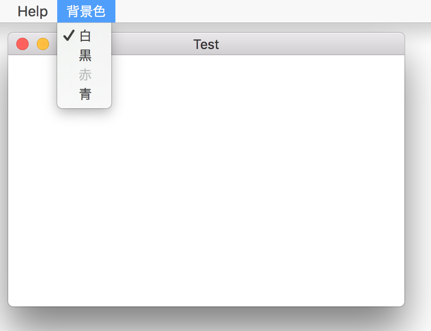
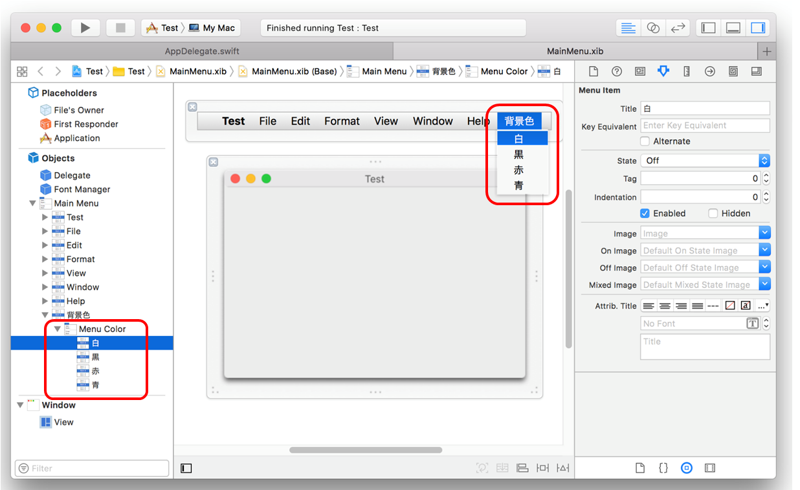
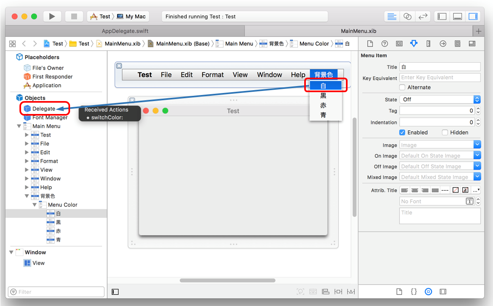
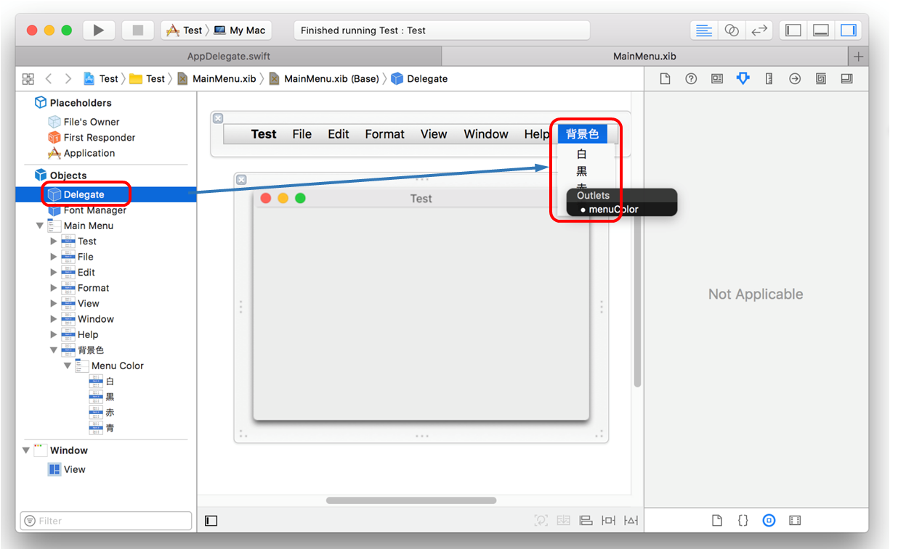
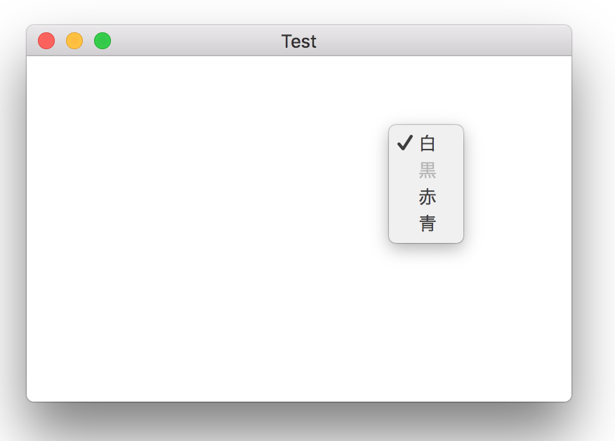
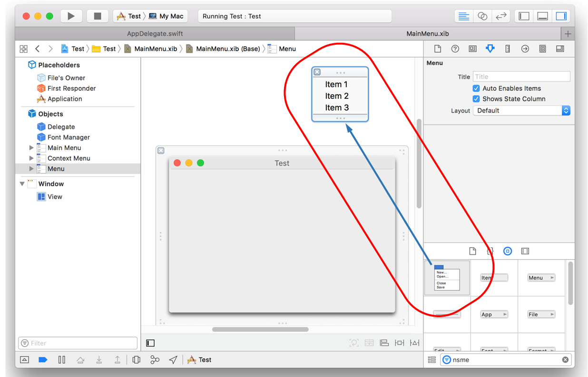
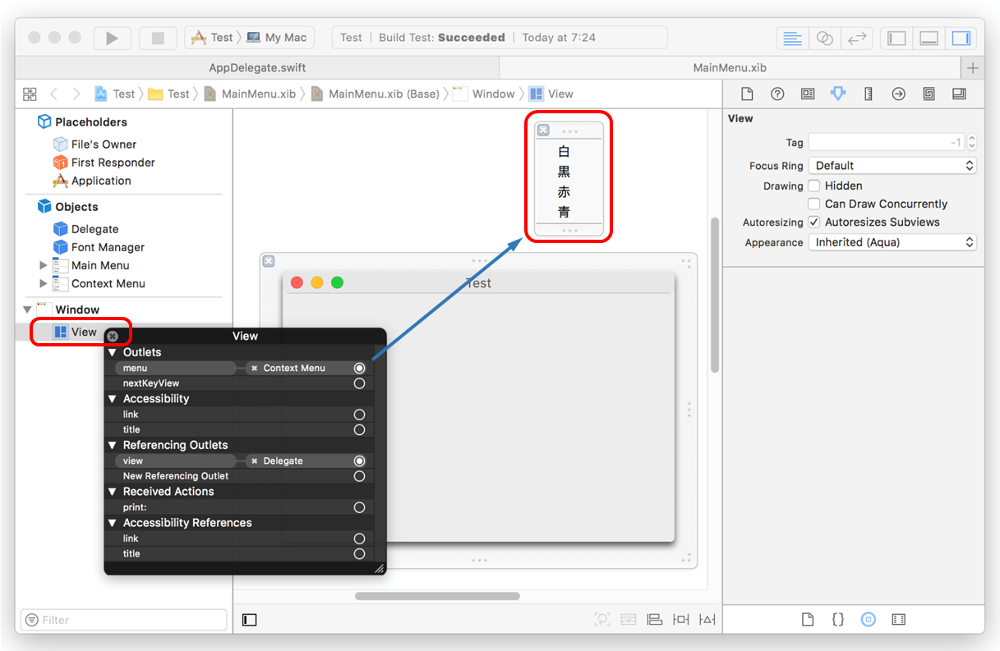
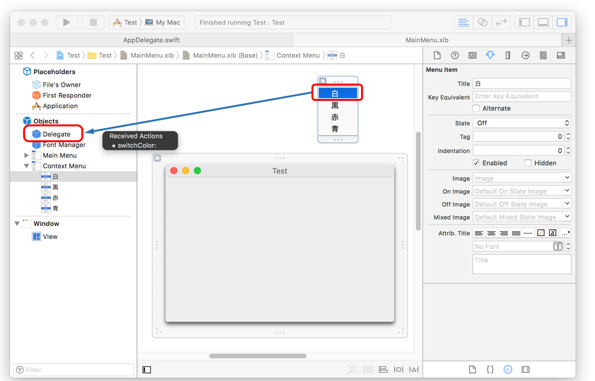
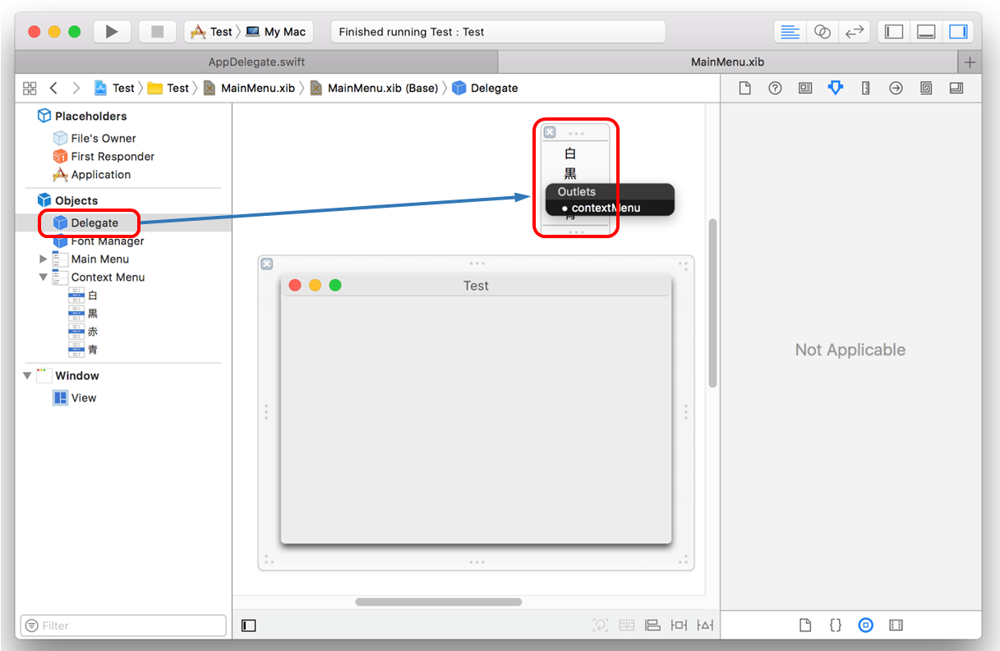

メニューの実装方法
メインメニュー
メインメニューにコンテントビューの背景色を変えるメニューを追加してみる。メニューアイテムの色を選択するとコンテントビューの背景色がそれに変わる。選択したアイテムにチェックをつける。特定の色を選択不可の状態（グレーアウト）にする。

画像をクリックすると動画になります。
(1) メニューとメニューアイテムの作成
インターフェイスビルダーにより作業する。メインメニューに新しいメニューを追加し、タイトルを「背景色」にする。色に対応するメニューアイテムを作成し、背景色メニューの下に吊り下げる。

各メニューアイテムから対応するアクションに接続を行う。本例では、全てのアイテムは AppDelegateクラスの switchColorメソッドに接続することで、メニューアイテムを選択したらこのメソッドが起動することになる。

AppDelegateクラスに定義したNSMenuクラスのプロパティを背景色メニューにアウトレット接続する。これによりプロパティ（menuColor）を通して、メニューアイテムのチェックの付け外しやアイテムの無効化（グレーアウト）の操作を行う。

(2) アクションメソッドの実装
メニューからメニューアイテム（色）を選択されたときのアプリケーションの動きを定義する。
本例では、メニューアイテムのタイトルに定義した色の文字を判定して、それに応じた色をコンテントビューのレイヤーの背景色にしている。
また、メニューアイテムのstateプロパティのオン/オフを切り替えることで、選択中の色のチェックを付け替えている。
(3) メニューアイテムの無効化
アプリケーションの初期処理の中で、メニューアイテムの isEnabledプロパティを偽にして、当該アイテムの表示をグレーアウトさせ、対応した色を選択できないようにしている。。なおこの機能を有効にするには、メニューの autoenablesItemsプロパティを偽にする必要がある。
コンテキストメニュー

画像をクリックすると動画になります。
実装は基本的にメインメニューの場合と同じ。
(1) メニューとメニューアイテムの作成
インターフェイスビルダーにより、新しいメニューオブジェクトを選び、xibエディターの余白のどこかにドロップする。メニューのタイトルを「背景色」にする（が、この文字列はどこにも反映されない）。

[ここがポイント] コンテキストメニューを表示するビューとメニューオブジェクトを接続する。本例ではコンテントビュー上でマウスの右クリックするとコンテキストメニューが表示されるようになる。

色に応じたメニューアイテムを作成し、メニューの下に追加する。全アイテムをAppDelegateクラスの switchColorメソッドに接続する。

AppDelegateクラスに定義した NSMenuクラスのプロパティ（contextMenu）を背景色メニューにアウトレット接続する。

(2) アクションメソッドの実装
メインメニューの実装と同じである。
(3) メニューアイテムの無効化
メインメニューの実装と同じである。